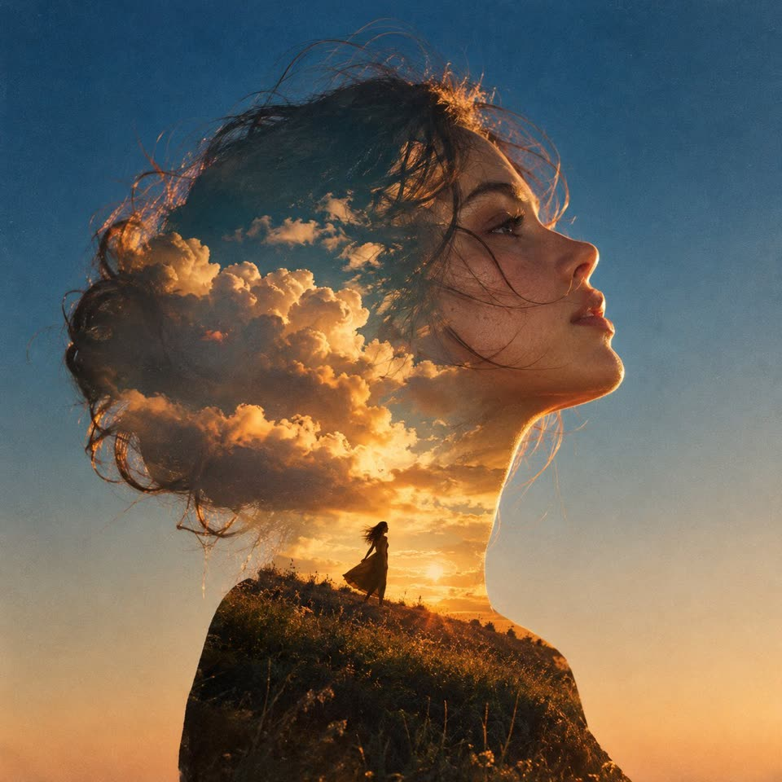

Surreal double-exposure sky portrait
MOO-018Moodunspecifiedby Tanvir (@Tanvir48992)2026-10-15

Side-profile double exposure where clouds and sunset sky fill the head — calm, freeing.
Prompt
Surreal double exposure portrait of a young woman in side profile, head slightly lifted, calm serene expression, hair in a loose messy bun with windswept strands. Her silhouette is filled with a golden-hour landscape: towering sunlit cumulus clouds glowing in warm amber and cream tones, and a grassy hilltop with a tiny silhouette of a woman in a flowing dress walking freely, hair blowing in the wind. Clear gradient blue sky background fading to soft warm haze at the bottom. Warm sunset rim light on her face, soft film grain, analog 35mm film look, Kodak Portra tones, dreamy cinematic atmosphere, minimalist composition, strong negative space, symmetrical silhouette blending, poetic and emotional mood, square composition. ultra-detailed, fine art photography, masterpiece, 8k --ar 1:1 --style raw --stylize 500
Our Seedance 2.5 adaptation
[ADAPTED for Seedance 2.5 by Grok Bot; not the creator's prompt. Follows the official BytePlus Seedance 2.5 prompt guide: asset binding → one-sentence summary → integer-second timeline → consistency notes → negatives.] API: duration 10, ratio 1:1, resolution 1080p, generate_audio true. Assets: Image 1 is the double-exposure still (first frame; set role first_frame, which locks the ratio to the image). Summary: A 10-second poetic double-exposure animation. Inside the woman's side-profile silhouette, golden-hour cumulus clouds drift, and a tiny figure in a flowing dress walks across a grassy hilltop. 0-4s: Locked-off. Clouds inside the silhouette drift slowly to the right, and windswept strands of her hair move gently. 4-8s: The tiny figure walks along the hilltop as her dress and hair blow in the wind. The warm rim light on the face brightens slightly. 8-10s: The woman's eyelids lower softly. Hold. Keep consistent: the silhouette blend stays fixed, with soft 35mm grain and Kodak Portra tones. No camera movement. Audio: soft wind and distant birds. No BGM. No subtitles.
Tags: serene, double exposure, surreal